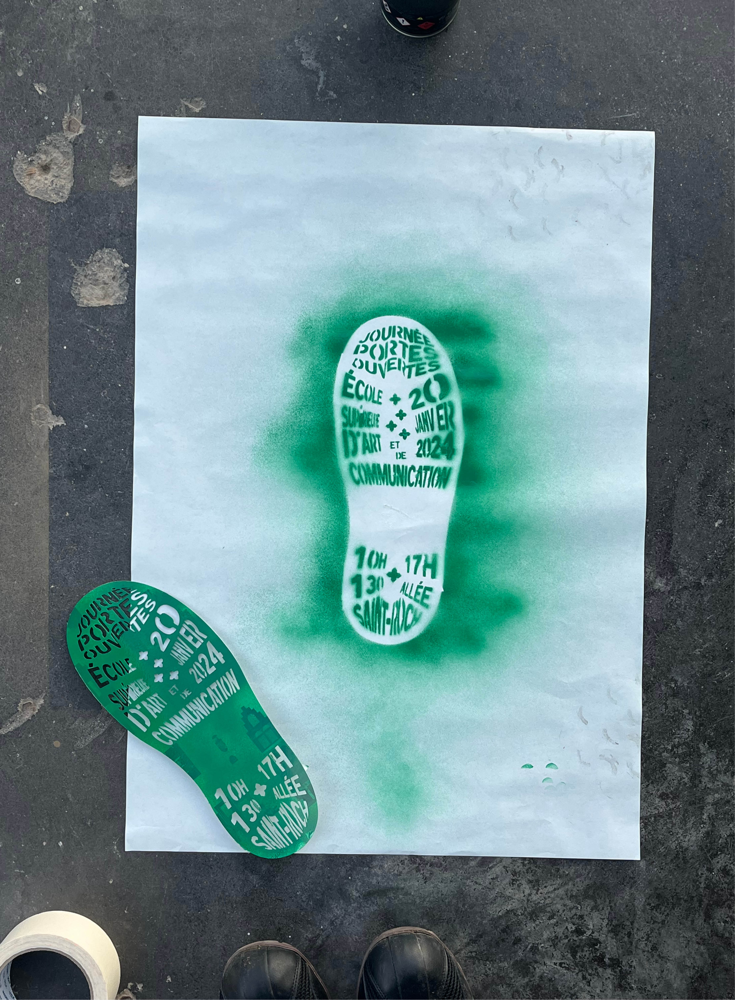
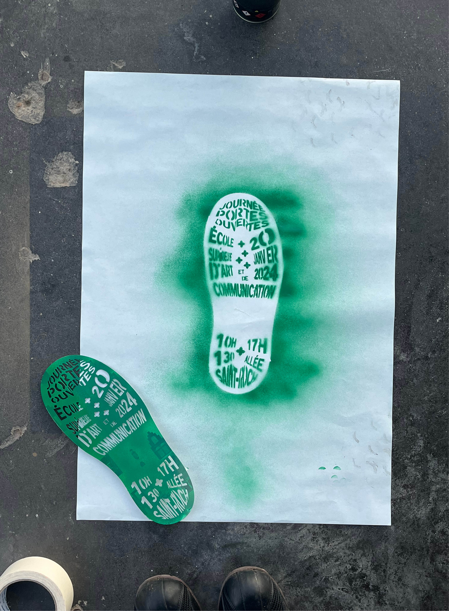

Journée Portes Ouvertes 2024
Le passage en études supérieures est une étape de la vie pour les étudiant.e.s, nos études nous font suivre des étapes et nous créons notre chemin en destination d'un diplôme. Pour certains, la route est fluide et sans trafic, d'autres empruntent des routes plus longues et sinueuses, et parfois on se
retrouve dans les embouteillages.
C'est sur cette même route que l'on rencontre des personnes empruntant les mêmes chemins que nous, lorsque nous sommes perdus nous pouvons toujours demander à monter dans la voiture d'un autre usager !
⟢Achevé d'imprimer à l'École Supérieure d'Art de Cambrai
⟢Janvier 2024
Avec l'aide de :
Bruno Souêtre,
Gilles Dupuis,
Mickael Tkindt-Naumann
KnitHz!
KnitHz! est un projet d'étude de création de pochettes de vinyle. Le label Warp6 a dans les années 90, crée avec les intelligences artificielles un album pour la première fois. Par le processus du machine learning, un code détecte les fréquences hertz de la musique et les retranscrit en forme. Ces formes sont ensuite reportées et tricotées sur une machine hackée. Ce projet soulève des enjeux autour de l'utilisation du machine learning dans la création artistique et de la relation entre la machine et l'artisanat. Cette combinaison de technologie et d'artisanat permet de repenser la relation entre la machine et l'artiste, et de réintroduire une dimension humaine dans le processus de création.
⟢Achevé de tricoter à la Green Fabric,
33 rue Jean-Baptiste Baeck, Ixelles.
⟢Mai 2023
Avec l'aide de :
Stéphanie Vilayphiou, Laurence Vagner,
Patrick Lehance, Pierre Smeets
Support your local bookshop, not Billionaire
Support your local bookshop, not billionaire est un projet de cartographie visant à répertorier les librairies indépendantes de la France et de la Belgique.
Le monopole d'Amazon dans la vente d'ouvrages a des conséquences néfastes sur les librairies locales, créant une addiction consumériste et restreignant la diversité culturelle. Amazon symbolise la surconsommation, favorisant l'achat impulsif avec une empreinte carbone élevée. La politique de destruction des invendus et Amazon Prime renforcent ces impacts. Malgré cela, des alternatives existent pour contrer ces habitudes de consommation et favoriser d'autres modes d'achat de livres.
⟢Publiée en Janvier 2024
Avec l'aide de :
Keyvane Alinaghi
Cracotte!
Toute mon enfance je l’ai passé avec toi, on voyageait souvent, de maison en maison, toi et moi. Après quinze voyages ensemble il a fallu que je voyage seule vers mon seizième voyage. Notre vie ensemble était comme un rêve, malgré tous les monstres sur notre route tu étais toujours la pour moi, nous avions créé notre propre maison de poupée ensemble, l’endroit de notre amour. Mais on s’est vite rendu compte lors de mon premier voyage loin de toi que ce n’était pas notre maison de poupée, ni les nuits passées ensemble, ni nos rêves partageaient qui définise notre amour. Notre amour à nous est sans limite, je t’aime dans notre maison de poupée, mais aussi loin d’elle, je t’aime dans nos rêves et je t’aime dans les miens. Plus je grandis et plus les monstres disparaissent de notre route.
⟢Achevé d'imprimer dans ma maison d'enfance
⟢Novembre 2023
⟢75x105mm
Avec l'aide de :
Gilles Dupuis,
Ida Ferrand
Women made fiber
Women made Fiber est le nom transitoire de mon article. L’article explore le lien entre le textile et l'informatique en se penchant sur Ada Lovelace, qui s'est inspirée des machines à tisser pour créer le premier langage informatique. Cette connexion entre les métiers à tisser et l'informatique crée un fil entre deux mondes apparemment opposés. L'analyse se poursuit avec Charlotte Johannesson, une artiste contemporaine, parlant des défis auxquels les femmes artistes étaient confrontées lorsqu'elles explorent des domaines technologiques. C’est un article qui à pour but de remettre en question les normes traditionnelles et de reconnaître le rôle crucial des femmes artistes dans l'avancée technologique.
Avec l'aide de :
Caroline Tron, Fabrice Sabatier
⟢carnet de recherche
⟢DNA 2024
⟢Marissal Eugénie
Le passage en études supérieures est une étape de la vie pour les étudiant.e.s, nos études nous font suivre des étapes et nous créons notre chemin en destination d'un diplôme. Pour certains, la route est fluide et sans trafic, d'autres empruntent des routes plus longues et sinueuses, et parfois on se
retrouve dans les embouteillages.
C'est sur cette même route que l'on rencontre des personnes empruntant les mêmes chemins que nous, lorsque nous sommes perdus nous pouvons toujours demander à monter dans la voiture d'un autre usager !
KnitHz! est un projet d'étude de création de pochettes de vinyle. Le label Warp6 a dans les années 90, crée avec les intelligences artificielles un album pour la première fois. Par le processus du machine learning, un code détecte les fréquences hertz de la musique et les retranscrit en forme. Ces formes sont ensuite reportées et tricotées sur une machine hackée. Ce projet soulève des enjeux autour de l'utilisation du machine learning dans la création artistique et de la relation entre la machine et l'artisanat. Cette combinaison de technologie et d'artisanat permet de repenser la relation entre la machine et l'artiste, et de réintroduire une dimension humaine dans le processus de création.
Support your local bookshop, not billionaire est un projet de cartographie visant à répertorier les librairies indépendantes de la France et de la Belgique.
Le monopole d'Amazon dans la vente d'ouvrages a des conséquences néfastes sur les librairies locales, créant une addiction consumériste et restreignant la diversité culturelle. Amazon symbolise la surconsommation, favorisant l'achat impulsif avec une empreinte carbone élevée. La politique de destruction des invendus et Amazon Prime renforcent ces impacts. Malgré cela, des alternatives existent pour contrer ces habitudes de consommation et favoriser d'autres modes d'achat de livres.
Toute mon enfance je l’ai passé avec toi, on voyageait souvent, de maison en maison, toi et moi. Après quinze voyages ensemble il a fallu que je voyage seule vers mon seizième voyage. Notre vie ensemble était comme un rêve, malgré tous les monstres sur notre route tu étais toujours la pour moi, nous avions créé notre propre maison de poupée ensemble, l’endroit de notre amour. Mais on s’est vite rendu compte lors de mon premier voyage loin de toi que ce n’était pas notre maison de poupée, ni les nuits passées ensemble, ni nos rêves partageaient qui définise notre amour. Notre amour à nous est sans limite, je t’aime dans notre maison de poupée, mais aussi loin d’elle, je t’aime dans nos rêves et je t’aime dans les miens. Plus je grandis et plus les monstres disparaissent de notre route.
Women made Fiber est le nom transitoire de mon article. L’article explore le lien entre le textile et l'informatique en se penchant sur Ada Lovelace, qui s'est inspirée des machines à tisser pour créer le premier langage informatique. Cette connexion entre les métiers à tisser et l'informatique crée un fil entre deux mondes apparemment opposés. L'analyse se poursuit avec Charlotte Johannesson, une artiste contemporaine, parlant des défis auxquels les femmes artistes étaient confrontées lorsqu'elles explorent des domaines technologiques. C’est un article qui à pour but de remettre en question les normes traditionnelles et de reconnaître le rôle crucial des femmes artistes dans l'avancée technologique.